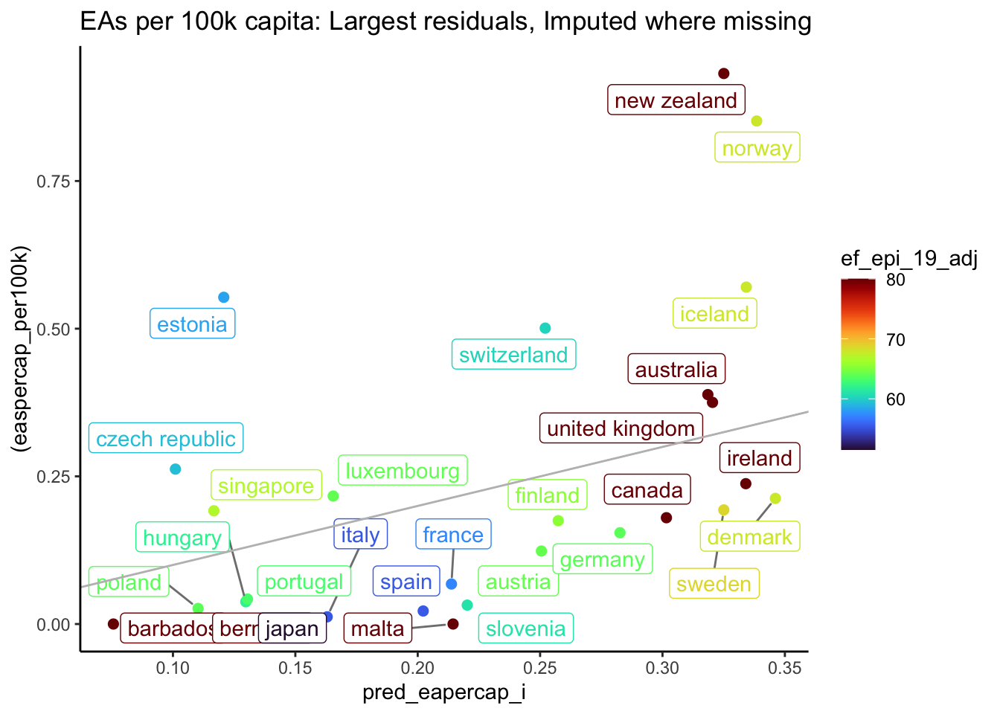

EF_English_Proficiency_Index <-read_csv(here("data", "supplementary", "EF_English_Proficiency_Index.csv")) %>%rename("ef_epi_19"=`2019 Score`) %>%mutate(country=tolower(Country),country =case_when( country =="mainland china"~"china", country =="russia"~"russian federation", country =="hong kong"~"hong kong sar china",TRUE~ country )) %>%select(country, ef_epi_19)
Our analysis (not shown) arguably suggested that the proficiency measure was the more reasonable one. However, this measure is missing for predominantly-English-speaking countries; we semi-arbitrarily assign these countries a score of 80.1
Another ‘average’ measure, not used in modeling below
The two English prevalence/proficiency measures cover different countries, each with many missing values. As a compromise measure, we averaged these two, taking the nonmissing value of one where the other is missing, a feature we call english_av. Where both are missing for a country, we took the average of the above average for the “Cultural Zone” of the country. (Code chunk below).
Code
eas_by_country_all <- eas_by_country_all %>%mutate(english_speakers_pctl =rank(EnglishSpeakers, ties.method =c("average"), na.last="keep")/sum(!is.na(EnglishSpeakers)),ef_epi_19_pctl =rank(ef_epi_19, ties.method =c("average"), na.last="keep")/sum(!is.na(ef_epi_19)), )eas_by_country_all$english_av <-rowMeans(eas_by_country_all %>%select(ef_epi_19_pctl, english_speakers_pctl) %>% as.matrix, na.rm =TRUE)eas_by_country_all <- eas_by_country_all %>%#impute to regional average where missinggroup_by(CulturalZone) %>%mutate(english_av_zone =mean(english_av, na.rm=TRUE),english_av =case_when(is.na(english_av) ~ english_av_zone,TRUE~ english_av) ) %>%ungroup()# next take the average of the nonmissing percentiles
What does the “English proficiency” feature look like?:
We quickly impute all other features (where they are missing) by taking the average for the “Cultural Zone” (relevant for below models: Emancipative and Secular). The data frame with imputed values is called eas_by_country_all_i, the one without imputations is eas_by_country_all.2
Next, we add the predicted values to the basic data set (imputed and non), to later make tables of predictions, and residuals, and share that data
Code
#the repetition for both data sets below is rubbish -- I should use 'map' insteadadd_preds <-function(df){ df %>%add_predictions(model_linear, var ="pred_linear") %>%add_predictions(model_linear_i, var ="pred_linear_i") %>%add_predictions(model_eapercap, var ="pred_eapercap") %>%add_predictions(model_eapercap_i, var ="pred_eapercap_i") %>%add_predictions(model_log_linear_p1, var ="pred_log_ea") %>%add_predictions(model_log_linear_p1_i, var ="pred_log_ea_i") %>%add_predictions(model_ea_psn, var ="pred_psn", type="response") %>%add_predictions(model_ea_psn_i, var ="pred_psn_i", type="response") %>%mutate(exp_pred_log_ea =exp(pred_log_ea),exp_pred_log_ea_i =exp(pred_log_ea_i),pred_eapercap_permil = pred_eapercap*10,pred_eapercap_permil_i = pred_eapercap_i*10,easpercap_permil = easpercap*1000*1000)}eas_by_country_all_m_i <- eas_by_country_all_i %>%add_preds eas_by_country_all_m <- eas_by_country_all %>% add_preds
2.1 Plotting predicted versus actual levels and largest ‘outliers’
We plot the predicted and actual numbers (or population shares) of EAs for each country, for most of the models. For each, we first plot the ‘complete cases’ only, and then the models with imputed missing values of features.
In each case countries above the grey degree line represent ‘overperformers’ relative to prediction and those below it ‘underperformers’. Note that while these are linear models, we plot on a log scale to make it more visible. This (falsely) suggest that the prediction is not centered, as moving above the line increases more quickly than moving below it decreases.
We color the country dots based on their English prevalence and proficiency score.
Note that the linear model is making some strange predictions, e.g., predicting very high numbers of EAs for small English-speaking/fluent countries. This is may be because the lack of proportionality doesn’t allow population to ‘matter enough.’ We will report on this model a bit less below.
Next we isolate the ‘largest positive or negative outliers’; the countries that are most ‘surprising’ to the model; the 20% of the countries with the most negative residual, and the 20% with the most positive resuduals. Here we also leave out countries with fewer than 10 EAs as well as fewer than 10 predicted EAs.5
Code
(ea_outliers_linear <- model_linear %>%augment(newdata=eas_by_country_all) %>%resid_filter(threshold_low, threshold_high) %>%# Keep largest outliers in either directionfilter(!(eas_3yr_avg < minEA_threshold & .fitted < minEA_threshold)) %>%ggplot() + devplotopts +aes(x=.fitted, y=(eas_3yr_avg), color=ef_epi_19_adj) +scale_x_continuous(trans='log2') +scale_y_continuous(trans='log2') +ggtitle("EAS per capita (linear, log scales): Largest residuals, no imputation") )
2.1.2 Per-capita (imposing linearity in population)
Code
(ea_dev_percap <- eas_by_country_all_m %>%ggplot() +aes(x=pred_eapercap, y=easpercap_per100k, color=ef_epi_19_adj) + devplotopts +ggtitle("EAs per 100k capita: predicted, actual, no imputation") )
Code
(ea_dev_percap_i <- eas_by_country_all_m_i %>%ggplot() +aes(x=pred_eapercap_i, y=easpercap_per100k, color=ef_epi_19_adj) + devplotopts +ggtitle("EAs per 100k capita: predicted, actual, imputed where missings") )
Code
(ea_percap_outliers <- eas_by_country_all_m %>%mutate(.resid = easpercap_per100k - pred_eapercap) %>%resid_filter(threshold_low, threshold_high) %>%#keep largest outliers in either directionfilter(!(easpercap_per100k<0.2& pred_eapercap <0.1)) %>%ggplot() +aes(x=pred_eapercap_i, y=(easpercap_per100k), color=ef_epi_19_adj) + devplotopts +ggtitle("EAs per 100k capita: Largest residuals, no imputation") )
Code
(ea_outliers_qp_i <- eas_by_country_all_m_i %>%mutate(.resid = easpercap_per100k - pred_eapercap_i) %>%resid_filter(threshold_low, threshold_high) %>%#keep largest outliers in either directionfilter(!(easpercap_per100k<0.2& pred_eapercap <0.1)) %>%ggplot() +aes(x=pred_eapercap_i, y=(easpercap_per100k), color=ef_epi_19_adj) + devplotopts +ggtitle("EAs per 100k capita: Largest residuals, Imputed where missing") )

For the outlier tables above, we drop countries with both less than 2 per million predicted and less than 2 million actual EAs.
Note that the above results are per capita; countries like Norway and Iceland have both many predicted and many EAs per capita, even though they have a small population and few total EAs.
(ea_outliers_qp <- eas_by_country_all_m %>%mutate(.resid = eas_3yr_avg - pred_psn) %>%resid_filter(threshold_low, threshold_high) %>%#keep largest outliers in either directionfilter(!(eas_3yr_avg<minEA_threshold & pred_psn <minEA_threshold)) %>%ggplot() +aes(x=pred_psn, y=(eas_3yr_avg), color=ef_epi_19_adj) +scale_x_continuous(trans='log2') +scale_y_continuous(trans='log2') + devplotopts +ggtitle("QP = EAs: Largest residuals, no imputation") )
Code
(ea_outliers_qp_i <- eas_by_country_all_m_i %>%mutate(.resid = eas_3yr_avg - pred_psn_i) %>%resid_filter(threshold_low, threshold_high) %>%#keep largest outliers in either directionfilter(!(eas_3yr_avg<minEA_threshold & pred_psn < minEA_threshold)) %>%ggplot() +aes(x=pred_psn_i, y=(eas_3yr_avg), color=ef_epi_19_adj) +scale_x_continuous(trans='log2') +scale_y_continuous(trans='log2') + devplotopts +ggtitle("QP - EAs: Top 5% largest residuals, Imputed where missing") )
Note that in the chart above, the ‘top and bottom 20% of outliers’ includes some fairly small outliers. For example, there are some large countries with small residuals listed below that are nonetheess among those with the largest residuals.
Below, a sortable table of residuals from each of the models, by country. (Along with population, EAs and EAs per million, and predicted EAS-per-capita from thethe per-capita model with imputation.)
Spreadsheet name: EAs_by_country_rich_data_predictions
ID: 1wpzIkHelCAexAFy6PgF-syqiQkmAXjc1jqQP7xKNzhI
Locale: en_US
Time zone: Etc/GMT
# of sheets: 2
(Sheet name): (Nominal extent in rows x columns)
with_imputation: 102 x 122
no_imputation: 102 x 122
Footnotes
For other countries where it is missing, we either drop this country (‘no imputation models’) or impute it at the average for the country’s “Cultural Zone”.↩︎
More careful work could do linear or nearest-neighbor imputation, or a specific model of missingness. We should also check the sensitivity of our results to these imputations.↩︎
With the tidy modeling tools we would do this more carefully, creating ‘recipes’ etc. I keep it a bit simpler for now. If we end up running more models and comparisons we may want to automate this more.↩︎
Note that for ‘constant elasticity models’ (log-log and exponential, i.e. Quasi-poisson) I log the features that are in real units; gdp-per capita and population to allow either linear or constant elasticity relationships. I do not log the features that are percentage indices, such as the English composite measure or the WVS indices.↩︎
Given the above strange result, we will not report this for the imputed model for this case; this tends to leave out smaller countries, a good thing in this case.↩︎
In the final graph above it looks like there are more negative than positive residuals. However, note these are presented on a log scale, and thus the observations above the line are ‘more overperforming’ than those just below the line.↩︎
Source Code
---project: type: website output-dir: docs/vignettesformat: html: theme: cosmo code-fold: true code-tools: true toc: true toc-depth: 3 number-sections: true number-depth: 3 citations-hover: true footnotes-hover: true margin-right: .1emexecute: freeze: auto # re-render only when source changes warning: false message: false error: truecomments: hypothesis: true---# EAS by country: understanding drivers, the search for outliers and untapped 'markets' ```{r}library(here)library(pacman)here <- here::here()filter <- dplyr::filterlibrary(rnoodling)library(rethinkpriorities)p_load(broom, dplyr, ggplot2, ggrepel, janitor, kableExtra, readr, tidyr, tidyselect, tidymodels, tidyverse, plotly, DT, install =FALSE)p_load(huxtable)p_load(modelr)p_load(httr)p_load(viridis, ggsci)p_load(googlesheets4)```## Bring in country level data (input by hand, etc)```{r input_eapercap}eas_by_country_all <-read_csv(here("data", "supplementary", "EAs per capita across time - Compiled Dataset.csv"), skip=1, na=c("N/A"))#Alt: input direct from Google sheets #May need authorisation to writeread from RP drivegs4_auth(scopes ="https://www.googleapis.com/auth/drive", email ="dreinstein@rethinkpriorities.org")eas_by_country_all <-read_sheet(ss ="https://docs.google.com/spreadsheets/d/1-oTtv71FnMfenXJtHiPwnhh-Za10s46AGmDLp4mnjvY/edit#gid=1909032845", sheet ="Compiled Dataset", skip=1, na=c("N/A")) eas_by_country_all <- eas_by_country_all %>%#mutate(across(matches("GDP|"), as.numeric)) %>% rowwise() %>%mutate(easpercap =rowMeans(across(c(EAspercapita_2018, EAspercapita_2019, EAspercapita_2020), na.rm=TRUE)),easpercap_per100k = easpercap*100*1000,log_easpercap =log(easpercap),eas_3yr_avg =rowMeans(across(c(EAs_2018, EAs_2019, EAs_2020), na.rm=TRUE)),log_eas_3yr_01 =log(eas_3yr_avg +0.1),population_3yr_avg =rowMeans(across(c(Population_2018, Population_2019, Population_2020), na.rm=TRUE)),gdpppp_3yr_avg =rowMeans(across(c(GDPPPP_2018, GDPPPP_2019, GDPPPP_2020), na.rm=TRUE)),gdppop_3yr_avg = gdpppp_3yr_avg/population_3yr_avg,log_gdppop_3yr_avg = (log(gdppop_3yr_avg)), ) %>%ungroup()med_country_gdppop <-median(eas_by_country_all$gdppop_3yr_avg, na.rm=TRUE)eas_by_country_all <- eas_by_country_all %>%mutate(gdppop_3yr_avg_above_med = gdppop_3yr_avg*(gdppop_3yr_avg>med_country_gdppop),log_gdppop_3yr_avg_above_med = log_gdppop_3yr_avg*(gdppop_3yr_avg>med_country_gdppop), )```## Further English language features and imputationWe add the UK Government classification of 'majority native English speaking' according to [university websites](https://www.northampton.ac.uk/international/english-language-requirements/majority-native-english-speaking-countries/).```{r}uk_govt_classified_english_speaking <-read_csv(here("data", "supplementary", "uk_govt_classified_english_speaking.csv"),col_names =FALSE) %>%transmute(country=tolower(X1)) %>%mutate(d_uk_english =1)eas_by_country_all <- eas_by_country_all %>%left_join(uk_govt_classified_english_speaking, by="country") %>%mutate(d_uk_english =case_when( country=="united states"~TRUE, #USA named differently in other data, needed fixing country=="bermuda"~TRUE, #an obvious omission!is.na(d_uk_english) ~TRUE,TRUE~FALSE ) )```We input a measure of English proficiency by country, from <https://en.wikipedia.org/wiki/EF_English_Proficiency_Index>, through a [Kaggler](https://www.kaggle.com/datasets/mathurinache/ef-english-proficiency-index?resource=download).```{r epi_input}EF_English_Proficiency_Index <-read_csv(here("data", "supplementary", "EF_English_Proficiency_Index.csv")) %>%rename("ef_epi_19"=`2019 Score`) %>%mutate(country=tolower(Country),country =case_when( country =="mainland china"~"china", country =="russia"~"russian federation", country =="hong kong"~"hong kong sar china",TRUE~ country )) %>%select(country, ef_epi_19)```Our analysis (not shown) arguably suggested that the proficiency measure was the more reasonable one. However, this measure is missing for predominantly-English-speaking countries; we semi-arbitrarily assign these countries a score of 80.^[For other countries where it is missing, we either drop this country ('no imputation models') or impute it at the average for the country's "Cultural Zone".]```{r epi_join_adjust}eas_by_country_all <- eas_by_country_all %>%left_join(EF_English_Proficiency_Index, by ="country") %>%mutate(ef_epi_19_adj =case_when( d_uk_english ==1~80,TRUE~ ef_epi_19) )```::: {.callout-note collapse="true"}## Another 'average' measure, not used in modeling belowThe two English prevalence/proficiency measures cover different countries, each with many missing values. As a compromise measure, we averaged these two, taking the nonmissing value of one where the other is missing, a feature we call `english_av`. Where both are missing for a country, we took the average of the above average for the "Cultural Zone" of the country. (Code chunk below).::: ```{r english_av}eas_by_country_all <- eas_by_country_all %>%mutate(english_speakers_pctl =rank(EnglishSpeakers, ties.method =c("average"), na.last="keep")/sum(!is.na(EnglishSpeakers)),ef_epi_19_pctl =rank(ef_epi_19, ties.method =c("average"), na.last="keep")/sum(!is.na(ef_epi_19)), )eas_by_country_all$english_av <-rowMeans(eas_by_country_all %>%select(ef_epi_19_pctl, english_speakers_pctl) %>% as.matrix, na.rm =TRUE)eas_by_country_all <- eas_by_country_all %>%#impute to regional average where missinggroup_by(CulturalZone) %>%mutate(english_av_zone =mean(english_av, na.rm=TRUE),english_av =case_when(is.na(english_av) ~ english_av_zone,TRUE~ english_av) ) %>%ungroup()# next take the average of the nonmissing percentiles```What does the "English proficiency" feature look like?:```{r english_shown}eas_by_country_all %>%select(country, ef_epi_19_adj) %>%mutate(across(is.numeric, round, digits =2)) %>%datatable(class ='cell-border stripe')(english_plot <- eas_by_country_all %>%ggplot() +aes(x=EnglishSpeakers, y=ef_epi_19_adj, color=d_uk_english) +geom_point(size=2) +geom_label_repel(aes(label = country),box.padding =0.3, point.padding =0.4,segment.color ='grey50') +ggtitle("English proficiency measure versus 'English Speakers share'") )```### Other imputation We quickly impute all other features (where they are missing) by taking the average for the "Cultural Zone" (relevant for below models: `Emancipative` and `Secular`). The data frame with imputed values is called `eas_by_country_all_i`, the one without imputations is `eas_by_country_all`.^[More careful work could do linear or nearest-neighbor imputation, or a specific model of missingness. We should also check the sensitivity of our results to these imputations.]```{r add_labels}#eas_by_country_all_i <- eas_by_country_all %>% #labelled::set_variable_labels(.labels = as.list(all_char_labels), .strict=FALSE)``````{r imputation}#imputation where missingeas_by_country_all_i <- eas_by_country_all %>%group_by(CulturalZone) %>%mutate_if(is.numeric, function(x) ifelse(is.na(x), median(x, na.rm = T), x)) %>%ungroup()```# ModelsI typically like to define the 'key features' and 'key outcomes' up top. I started on this here, but didn't do it too much.^[With the tidy modeling tools we would do this more carefully, creating 'recipes' etc. I keep it a bit simpler for now. If we end up running more models and comparisons we may want to automate this more.]```{r modelprep}#key featuresfeatures_percap <-c("gdppop_3yr_avg", "gdppop_3yr_avg_above_med", "d_uk_english", "ef_epi_19_adj", "Emancipative", "Secular")features <-c("population_3yr_avg", features_percap)log_features_percap <-c("log_gdppop_3yr_avg", "d_uk_english", "ef_epi_19_adj", "Emancipative", "Secular")log_features <-c("log(population_3yr_avg)", log_features_percap)#This makes complete cases only:#eas_by_country_all_nomissing <- eas_by_country_all %>% na.omit(features)rownames(eas_by_country_all) <- eas_by_country_all$country rownames(eas_by_country_all_i) <- eas_by_country_all_i$country #Using rownames is an annoying workaround to get labels in graphs later. There's probably a better way.```Below, we construct models - imputed and complete-case-only data, - with linear, log transformations (adding a small number to avoid dropping 0's), and exponential (quasi-Poisson) specifications^[Note that for 'constant elasticity models' (log-log and exponential, i.e. Quasi-poisson) I log the features that are in real units; gdp-per capita and population to allow either linear or constant elasticity relationships. I do not log the features that are percentage indices, such as the English composite measure or the WVS indices.]- with level and per-capita outcomes (the latter imposes linearity in population).```{r lm_ea_all}model_linear <- eas_by_country_all %>%lm(make_formula("eas_3yr_avg", features), .) model_linear_i <- eas_by_country_all_i %>%lm(make_formula("eas_3yr_avg", features), .) #model_log_eapercap <- eas_by_country_all %>% filter(easpercap>0) %>% lm(make_formula("log_easpercap", log_features_percap), .) model_log_eapercap_i <- eas_by_country_all_i %>% filter(easpercap>0) %>% lm(make_formula("log_easpercap", log_features_percap), model_eapercap <- eas_by_country_all %>%lm(make_formula("easpercap_per100k", features_percap), .)model_eapercap_i <- eas_by_country_all_i %>%lm(make_formula("easpercap_per100k", features_percap), .)model_log_linear_p1 <- eas_by_country_all %>%lm(make_formula("log_eas_3yr_01", log_features), .) model_log_linear_p1_i <- eas_by_country_all_i %>%lm(make_formula("log_eas_3yr_01", log_features), .) model_ea_psn <- eas_by_country_all %>%glm(make_formula("eas_3yr_avg", log_features), family=quasipoisson, data =.) model_ea_psn_i <- eas_by_country_all_i %>%glm(make_formula("eas_3yr_avg", log_features), family=quasipoisson, data =.) ```We put the coefficients of these models into summary tables below:```{r ea_by_country_all_models_table}(ea_by_country_all_models_table <-huxreg("Linear"= model_linear, "... imputed"= model_linear_i,"Per `100k` capita"= model_eapercap, "... imputed"= model_eapercap_i, "log EAs + 0.1"= model_log_linear_p1, "... imputed"= model_log_linear_p1_i,"Quasi-Poisson"= model_ea_psn,"... imputed"= model_ea_psn_i) %>%set_number_format(row=-1, col=-1, value="%#.2f") %>%set_bold(1, everywhere) %>%set_bottom_border(1, everywhere) %>%set_caption_pos("top") %>%set_caption("EAs by country: Models") %>%set_col_width(c(.25, rep(.13,8))))```Next, we add the predicted values to the basic data set (imputed and non), to later make tables of predictions, and residuals, and share that data ```{r eas_by_country_all_m}#the repetition for both data sets below is rubbish -- I should use 'map' insteadadd_preds <-function(df){ df %>%add_predictions(model_linear, var ="pred_linear") %>%add_predictions(model_linear_i, var ="pred_linear_i") %>%add_predictions(model_eapercap, var ="pred_eapercap") %>%add_predictions(model_eapercap_i, var ="pred_eapercap_i") %>%add_predictions(model_log_linear_p1, var ="pred_log_ea") %>%add_predictions(model_log_linear_p1_i, var ="pred_log_ea_i") %>%add_predictions(model_ea_psn, var ="pred_psn", type="response") %>%add_predictions(model_ea_psn_i, var ="pred_psn_i", type="response") %>%mutate(exp_pred_log_ea =exp(pred_log_ea),exp_pred_log_ea_i =exp(pred_log_ea_i),pred_eapercap_permil = pred_eapercap*10,pred_eapercap_permil_i = pred_eapercap_i*10,easpercap_permil = easpercap*1000*1000)}eas_by_country_all_m_i <- eas_by_country_all_i %>%add_preds eas_by_country_all_m <- eas_by_country_all %>% add_preds```## Plotting predicted versus actual levels and largest 'outliers'```{r devplotopts}devplotopts <-list( geom_point(size=2), geom_label_repel(aes(label = country),box.padding =0.3, point.padding =0.4,segment.color ='grey50'),geom_abline(intercept =0, slope =1, color='grey'),theme_classic(), scale_color_viridis(option ="H") )```We plot the predicted and actual numbers (or population shares) of EAs for each country, for most of the models. For each, we first plot the 'complete cases' only, and then the models with imputed missing values of features.In each case countries above the grey degree line represent 'overperformers' relative to prediction and those below it 'underperformers'. Note that while these are linear models, we plot on a log scale to make it more visible. This (falsely) suggest that the prediction is not centered, as moving above the line increases more quickly than moving below it decreases.We color the country dots based on their English prevalence and proficiency score. ### Linear```{r model_eapercap_linear}(ea_dev_linear <- model_linear %>%augment(newdata=eas_by_country_all) %>%ggplot() + devplotopts +aes(x=.fitted, y=eas_3yr_avg, color=ef_epi_19_adj) +scale_x_continuous(trans='log10') +scale_y_continuous(trans='log10') +ggtitle("EAS per capita (linear model, log scales): Predicted, actual, no imputation") )(ea_dev_linear_i <- model_linear_i %>%augment(newdata=eas_by_country_all_i) %>%ggplot() + devplotopts +aes(x=.fitted, y=eas_3yr_avg, color=ef_epi_19_adj) +scale_x_continuous(trans='log10') +scale_y_continuous(trans='log10') +ggtitle("EAS per capita (linear, log scales): Predicted, actual, Imputed where missing") )```Note that the linear model is making some strange predictions, e.g., predicting very high numbers of EAs for small English-speaking/fluent countries. This is may be because the lack of proportionality doesn't allow population to 'matter enough.' We will report on this model a bit less below.```{r}resid_threshold <-15threshold_low <-1/5threshold_high <-4/5resid_filter <-function(df, threshold_low =1/5, threshold_high =4/5, residname = .resid) { df %>%filter(.resid <quantile({{residname}}, threshold_low, na.rm =TRUE)| .resid >quantile({{residname}}, threshold_high, na.rm =TRUE)) }minEA_threshold <-10```Next we isolate the 'largest positive or negative outliers'; the countries that are most 'surprising' to the model; the `r threshold_low*100`% of the countries with the most negative residual, and the `r 100-threshold_high*100`% with the most positive resuduals. Here we also leave out countries with fewer than `r minEA_threshold` EAs as well as fewer than `r minEA_threshold` predicted EAs.^[Given the above strange result, we will not report this for the imputed model for this case; this tends to leave out smaller countries, a good thing in this case.]```{r ea_outliers_linear}(ea_outliers_linear <- model_linear %>%augment(newdata=eas_by_country_all) %>%resid_filter(threshold_low, threshold_high) %>%# Keep largest outliers in either directionfilter(!(eas_3yr_avg < minEA_threshold & .fitted < minEA_threshold)) %>%ggplot() + devplotopts +aes(x=.fitted, y=(eas_3yr_avg), color=ef_epi_19_adj) +scale_x_continuous(trans='log2') +scale_y_continuous(trans='log2') +ggtitle("EAS per capita (linear, log scales): Largest residuals, no imputation") )#Not shown:ea_outliers_linear_i <- model_linear_i %>%augment(newdata=eas_by_country_all_i) %>%resid_filter(threshold_low, threshold_high) %>%filter(!(eas_3yr_avg < minEA_threshold & .fitted <minEA_threshold)) %>%ggplot() +aes(x=.fitted, y=eas_3yr_avg, color=ef_epi_19_adj) + devplotopts +scale_x_continuous(trans='log2') +scale_y_continuous(trans='log2') +ggtitle("EAS per capita (linear, log scales): Largest residuals, Imputed where missing") ```^[In the final graph above it looks like there are more negative than positive residuals. However, note these are presented on a log scale, and thus the observations above the line are 'more overperforming' than those just below the line.]### Per-capita (imposing linearity in population)```{r model_eapercap_plot}(ea_dev_percap <- eas_by_country_all_m %>%ggplot() +aes(x=pred_eapercap, y=easpercap_per100k, color=ef_epi_19_adj) + devplotopts +ggtitle("EAs per 100k capita: predicted, actual, no imputation") )(ea_dev_percap_i <- eas_by_country_all_m_i %>%ggplot() +aes(x=pred_eapercap_i, y=easpercap_per100k, color=ef_epi_19_adj) + devplotopts +ggtitle("EAs per 100k capita: predicted, actual, imputed where missings") )(ea_percap_outliers <- eas_by_country_all_m %>%mutate(.resid = easpercap_per100k - pred_eapercap) %>%resid_filter(threshold_low, threshold_high) %>%#keep largest outliers in either directionfilter(!(easpercap_per100k<0.2& pred_eapercap <0.1)) %>%ggplot() +aes(x=pred_eapercap_i, y=(easpercap_per100k), color=ef_epi_19_adj) + devplotopts +ggtitle("EAs per 100k capita: Largest residuals, no imputation") )(ea_outliers_qp_i <- eas_by_country_all_m_i %>%mutate(.resid = easpercap_per100k - pred_eapercap_i) %>%resid_filter(threshold_low, threshold_high) %>%#keep largest outliers in either directionfilter(!(easpercap_per100k<0.2& pred_eapercap <0.1)) %>%ggplot() +aes(x=pred_eapercap_i, y=(easpercap_per100k), color=ef_epi_19_adj) + devplotopts +ggtitle("EAs per 100k capita: Largest residuals, Imputed where missing") )```For the outlier tables above, we drop countries with both less than 2 per million predicted and less than 2 million actual EAs.Note that the above results are *per capita*; countries like Norway and Iceland have both many predicted and many EAs per capita, even though they have a small population and few total EAs.### Log-log (adding 0.1)```{r model_ea_log_plot}(ea_dev_log <- model_log_linear_p1 %>%augment(newdata=eas_by_country_all) %>%ggplot() +aes(x=.fitted, y= log_eas_3yr_01, color=ef_epi_19_adj) + devplotopts +ggtitle("Log (EAs+0.1): Predicted, actual, no imputation") )(ea_dev_log_i <- model_log_linear_p1_i %>%augment(newdata=eas_by_country_all_i) %>%ggplot() +aes(x=.fitted, y=log_eas_3yr_01, color=ef_epi_19_adj) + devplotopts +ggtitle("Log (EAs+0.1): Predicted, actual, Imputed where missing") )(ea_outliers_log <- model_log_linear_p1 %>%augment(newdata=eas_by_country_all) %>%resid_filter(threshold_low, threshold_high) %>%# Keep largest outliers in either directionfilter(!(eas_3yr_avg<minEA_threshold &exp(.fitted) < minEA_threshold)) %>%ggplot() +aes(x=.fitted, y=(log_eas_3yr_01), color=ef_epi_19_adj) + devplotopts +ggtitle("Log (EAs+0.1): Largest residuals, no imputation") )(ea_outliers_log_i <- model_log_linear_p1_i %>%augment(newdata=eas_by_country_all_i) %>%resid_filter(threshold_low, threshold_high) %>%# Keep largest outliers in either directionfilter(!(eas_3yr_avg<minEA_threshold &exp(.fitted) < minEA_threshold)) %>%ggplot() +aes(x=.fitted, y=`log_eas_3yr_01`, color=ef_epi_19_adj) + devplotopts +ggtitle("Log (EAs+0.1): Largest residuals, Imputed where missing") )```This model appears to be making more reasonable predictions; it is not predicting, e.g., hundreds of EAs in Barbados.### Exponential (Quasi-Poisson)Exponential models are similar in interpretation to log-log models but are often seen as preferable. ```{r model_ea_qp_plot}(ea_dev_qp <- eas_by_country_all_m %>%ggplot() +aes(x=pred_psn, y=eas_3yr_avg, color=ef_epi_19_adj) +scale_x_continuous(trans='log2') +scale_y_continuous(trans='log2') + devplotopts +ggtitle("QP model - EAs: predicted, actual, no imputation") )(ea_dev_qp_i <- eas_by_country_all_m_i %>%ggplot() +aes(x=pred_psn, y=eas_3yr_avg, color=ef_epi_19_adj) +scale_x_continuous(trans='log2') +scale_y_continuous(trans='log2') + devplotopts +ggtitle("QP - EAs: Predicted, actual, Imputed where missing") )(ea_outliers_qp <- eas_by_country_all_m %>%mutate(.resid = eas_3yr_avg - pred_psn) %>%resid_filter(threshold_low, threshold_high) %>%#keep largest outliers in either directionfilter(!(eas_3yr_avg<minEA_threshold & pred_psn <minEA_threshold)) %>%ggplot() +aes(x=pred_psn, y=(eas_3yr_avg), color=ef_epi_19_adj) +scale_x_continuous(trans='log2') +scale_y_continuous(trans='log2') + devplotopts +ggtitle("QP = EAs: Largest residuals, no imputation") )(ea_outliers_qp_i <- eas_by_country_all_m_i %>%mutate(.resid = eas_3yr_avg - pred_psn_i) %>%resid_filter(threshold_low, threshold_high) %>%#keep largest outliers in either directionfilter(!(eas_3yr_avg<minEA_threshold & pred_psn < minEA_threshold)) %>%ggplot() +aes(x=pred_psn_i, y=(eas_3yr_avg), color=ef_epi_19_adj) +scale_x_continuous(trans='log2') +scale_y_continuous(trans='log2') + devplotopts +ggtitle("QP - EAs: Top 5% largest residuals, Imputed where missing") )```Note that in the chart above, the 'top and bottom 20% of outliers' includes some fairly small outliers. For example, there are some large countries with small residuals listed below that are nonetheess among those with the largest residuals. ```{r usoutlier}eas_by_country_all_m_i %>%mutate(.resid = eas_3yr_avg - pred_psn_i) %>%resid_filter(threshold_low, threshold_high) %>%filter(abs(.resid)<12& population_3yr_avg>60*1000*1000) %>%arrange(-population_3yr_avg) %>%select(country, population_3yr_avg, eas_3yr_avg, pred_psn_i, .resid )```## Table of residualsBelow, a sortable table of residuals from each of the models, by country. (Along with population, EAs and EAs per million, and predicted EAS-per-capita from thethe per-capita model with imputation.)```{r tabresid}( eas_v_predicted <- eas_by_country_all_m_i %>%mutate(resid_linear = eas_3yr_avg - pred_linear,resid_linear_i = eas_3yr_avg - pred_linear_i,resid_per100k = easpercap_per100k - pred_eapercap,resid_per100k_i = easpercap_per100k - pred_eapercap_i,resid_log_exp = easpercap_per100k -exp(pred_log_ea),resid_log_exp_i = easpercap_per100k -exp(pred_log_ea_i),resid_psn = eas_3yr_avg - pred_psn,resid_psn_i = eas_3yr_avg - pred_psn_i ) %>%mutate(across(is.numeric, round, digits =2)) %>%select(country, population_3yr_avg, eas_3yr_avg, easpercap_permil, pred_eapercap_i, starts_with("resid_")) %>%datatable(class ='cell-border stripe'))```# Exporting all data (and model results) to git and Gsheets As RData, csv in the Github repo```{r saveraw}saveRDS(eas_by_country_all_m, file =here("data", "supplementary", "eas_by_country_features_predictions_no_imputation.RData"))saveRDS(eas_by_country_all_m_i, file =here("data", "supplementary", "eas_by_country_features_predictions_missings_imputed.RData"))write_csv2(eas_by_country_all_m, file =here("data", "supplementary", "eas_by_country_features_predictions_no_imputation.csv"))write_csv2(eas_by_country_all_m_i, file =here("data", "supplementary", "eas_by_country_features_predictions_missings_imputed.csv"))```Exporting the data and predictions to the Gsheet [HERE](https://docs.google.com/spreadsheets/d/1OcxxMTjMPT1gg2w47h9ADn_eLDn_QcvCjMKdEBDZKFc/edit#gid=325316997)Unfortunately, it makes a new sheet each time; need to find a fix for this! Thus the code below is set to not be run automatically.```{r}#! eval: FALSE#! results: false#! label: export#Need authorisation to write to RP drivegs4_auth(scopes ="https://www.googleapis.com/auth/drive", email ="dreinstein@rethinkpriorities.org")(eas_gsheet <-gs4_create("EAs_by_country_rich_data_predictions",sheets =list(with_imputation = eas_by_country_all_m_i %>%mutate_if(is.numeric, ~replace(., is.infinite(.), 1)), no_imputation = eas_by_country_all_m %>%mutate_if(is.numeric, ~replace(., is.infinite(.), 1)) )))```